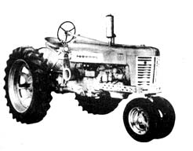

The International 350. This, the only diesel mentioned in the above article, is also available with wide stance front wheels. You won't find nearly as many diesel as ordinary spark ignition tractors on the used market and, if you can't locate a 350 but you have your heart set on an International, try an F-20, M or Super M.